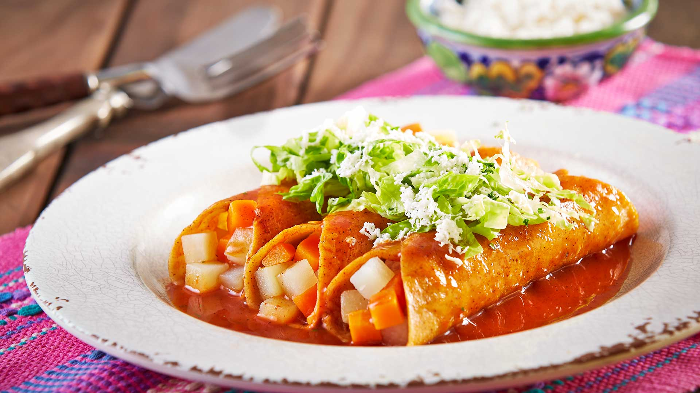
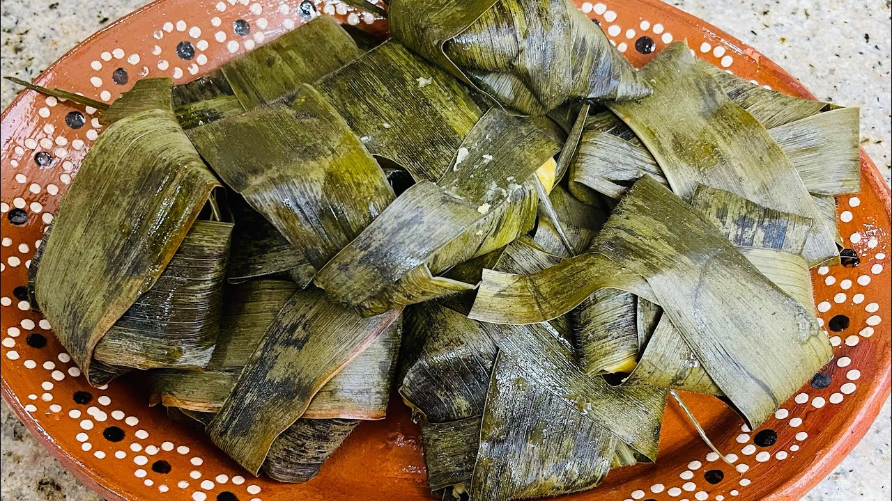
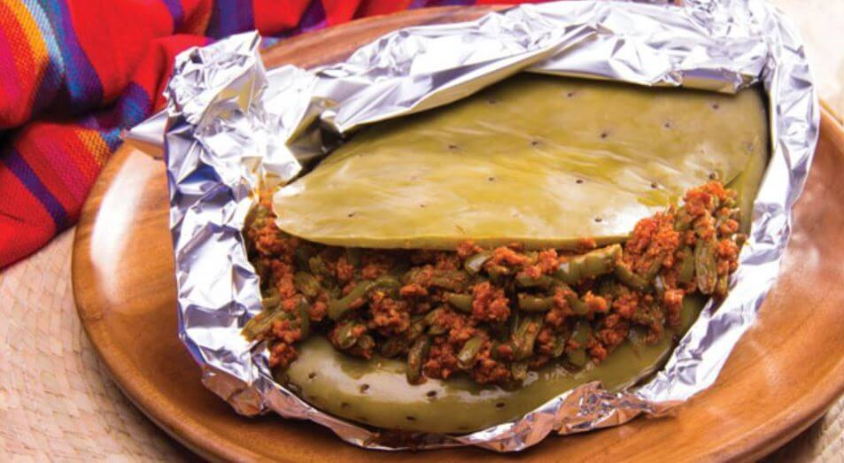

La gastronomia de Guanajuato
🌮 1. Enchiladas Mineras
Plato emblemático de Guanajuato.
Son tortillas de maíz rellenas de queso o pollo, bañadas en salsa roja de chile guajillo y acompañadas con papas, zanahorias y queso rallado. ( Su nombre proviene de las comidas que se preparaban para los mineros.
).
🍲 2. Fiambre estilo San Miguel de Allende
Ensalada fría compuesta por carnes frías (como jamón, chorizo, salchicha), vegetales, quesos y frutas en vinagre..
Se sirve en ocasiones especiales como fiestas patrias o el Día de Muertos.
🌵 3.Cecina de res
Carne de res salada y secada al sol, muy popular en comunidades como San Luis de la Paz y Tierra Blanca.
Se consume frita o asada, generalmente con nopales, salsa y tortillas.
🐛 4. Gorditas de maíz quebrado
Gorditas hechas con maíz quebrado (nixtamal sin moler completamente), rellenas de guisos como chicharrón, nopales, frijoles o queso.
Se cocinan en comal o fritas.
🍜 5. Tamales de ceniza
Tamales elaborados con masa mezclada con ceniza vegetal (de maíz), lo que les da un color grisáceo y un sabor particular.
Son típicos de zonas rurales.
🍞 6. Nopal en penca
Preparación donde se cocinan nopales grandes dentro de una penca de maguey, rellenos con carne y verduras, y se cuecen al vapor o al horno, como si fueran un "mixiote".
☕ 7.Guacamaya
Típica de León. Es un bolillo crujiente relleno de chicharrón duro, salsa picosa y, a veces, cueritos.
Es una botana muy popular y económica.